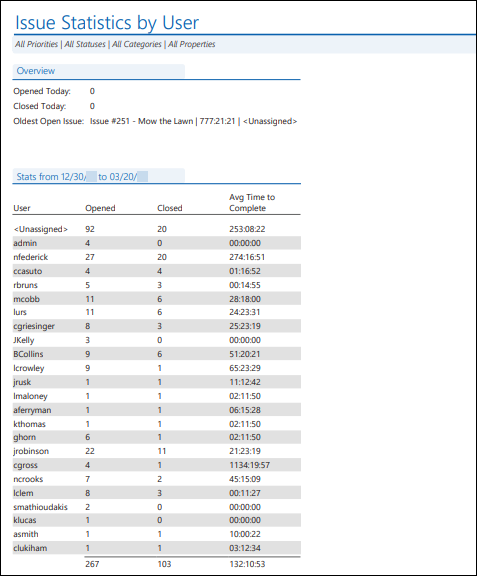
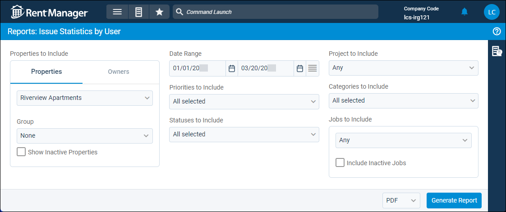

Source: https://rmxhelp.rentmanager.com/Topics/Express/Other/Reports/Issue-Statistics-By-User.htm
Issue Statistics by User (Report)
The Issue Statistics by User tracks service issue performance metrics for Rent Manager users, including counts of open and closed issues, close rates, and issue aging.
Related Privileges
| Group | Privilege | Column |
|---|---|---|
| Letter/Email Templates/Reports/Packets | Run reports | Enabled |
Additionally, on the Reports tab, you must have access to Issue Statistics by User.
For more information, refer to Control User Access.
To view the Issue Statistics by User, do the following:
-
Go to
 arrow_forward Services arrow_forward Service Manager arrow_forward Issue Statistics by User.
arrow_forward Services arrow_forward Service Manager arrow_forward Issue Statistics by User.
The Reports: Issue Statistics by User page displays. -
Adjust the report options as desired. Each option is described below.
-
Generate the report in your desired file format(s).
Related Preferences
Reports may look different depending on whether or not the Use modernized report style system preference is enabled. For more information, refer to General Report Options (System Preferences).

Report Options
The report options described below determine what data displays in the report.

Properties/Owners to Include
Check each property or owner to be included in the report. Alternatively, select a property or owner Group.
More Information
Only information related to the properties to which you have access displays. Your access to properties can be managed from your user account or on the property's details page. For more information, refer to Limit Access to a Property.
Optionally, check Show Inactive Properties to include properties that are no longer active.
Select <No Property Selected> to include issues that are not linked to a property, unit, or tenant.
Date Range
Enter or select the date range to determine the data that displays in the report.
In the Date Range section, set the From and To dates for which the report should examine data.
These fields automatically populate with today’s date. Enter a different date or select a date from the calendar. Alternatively, adjust the dates using the available preset buttons or click  to open more options for setting a date range.
to open more options for setting a date range.
Priorities to Include
Check each issue priority to include issues associated with the priorities in the report's performance metrics. For more information, refer to Issue Priorities (Page). Check <Unassigned> to include service issues that do not have a priority assigned.
Statuses to Include
Check each issue status to include issues associated with the statuses in the report's performance metrics. For more information, refer to Issue Statuses (Page). Check <Unassigned> to include service issues that do not have a status assigned.
Projects to Include
Select the project to include issues associated with that project in the report results. To include issues associated with all projects, select Any from the drop-down list. For more information on projects, refer to Workflow Projects and Templates.
Categories to Include
Check each issue category to include issues associated with the categories in the report's performance metrics. For more information, refer to Issue Categories (Page). Check <Unassigned> to include service issues that do not have a category assigned.
Job Selection
Select a job to include associated issues. To include service issues associated with all jobs, select Any from the drop-down list.
Related Preferences
This option is available only if Enable job costing is selected in system preferences. For more information, refer to General Options (System Preferences).
Report Results
The report results are described below including, if applicable, section, column, and subreport or tab descriptions.
Report Header
The report header displays the report name and key information selected in the report options, such as date information and which properties were examined in the report.
Column Descriptions
The columns that display in the report are described below.
| Column | Description |
|---|---|
|
Opened Today |
The number of issues that have today's date as the Opened date in the Service Issue details page. |
|
Closed Today |
The number of issues that have today's date as the Closed date in the Service Issue details page. |
|
Oldest Open Issue |
The length of time that the oldest issue has been open, in Days:Hours:Minutes format. In addition, the Issue #, the name of the Rent Manager user to whom the issue is assigned, and the Issue title display to help track the issue. |
|
User |
The Username of the Rent Manager user(s) to whom issues were assigned during the Date Range. Any service issue that is created but not assigned to a user are tallied in the appropriate column for the <Unassigned> row. |
|
Opened |
The number of issues that were both assigned to each user and opened during the Date Range. The total number of issues opened during the date range appears at the bottom of the column. |
|
Closed |
The number of issues that were both assigned to each user and closed during the Date Range. The total number of issues closed during the date range appears at the bottom of the column. |
|
Avg Time to Complete |
The average length of time it took each Rent Manager user to close a service issue during the Date Range, in Days:Hours:Minutes format. The average completion time across all users during the Date Range displays at the bottom of the column. |
|
Current Open |
The number of open issues currently assigned to each Rent Manager user. The total number of all open service issues displays at the bottom of the column. |
|
Total Closed |
The number of service issues closed by, or closed while assigned to, each Rent Manager user. The total number of all closed service issues displays at the bottom of the column. |
|
Avg Time to Complete |
The average length of time it took each Rent Manager user to close each issue that was assigned to them, in Days:Hours:Minutes format. The average completion time across all users is displayed at the bottom of the column. |
|
Avg Age of Open |
The average age of open service issues currently assigned to each Rent Manager user, in Days:Hours:Minutes format. The average age of all open service issues displays at the bottom of the column. |
|
Oldest Open Issue |
The length of time that the oldest service issue assigned to each Rent Manager user has been open, in Days:Hours:Minutes format. In addition, the Issue # appears to help track the issue. |